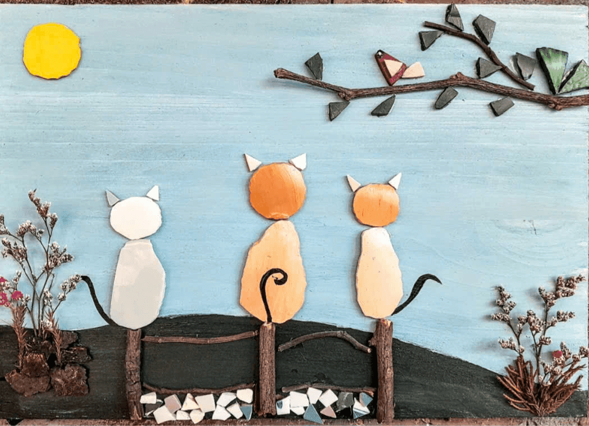
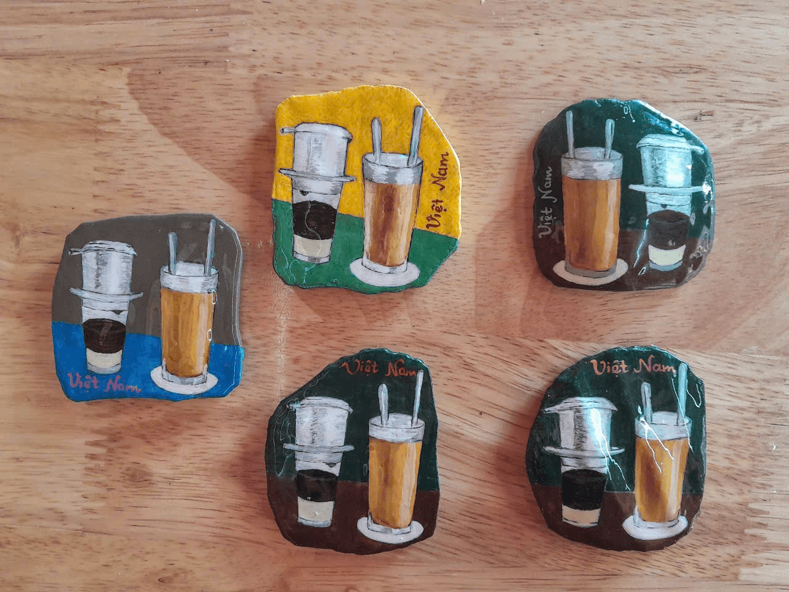
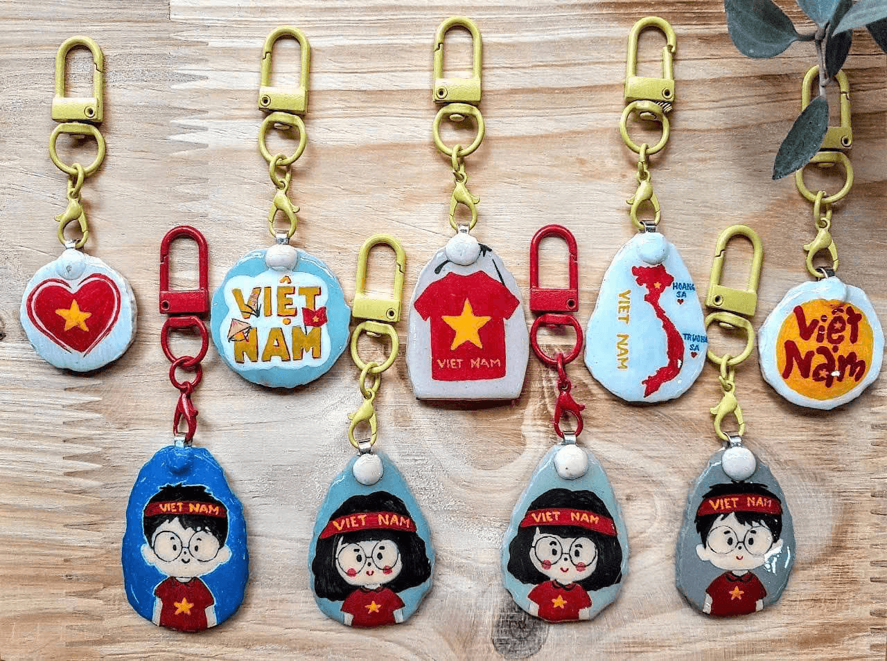

Sáng tạo bắt đầu từ những mảnh vỡ
Chính từ những mảnh gốm không còn nguyên vẹn, hành trình sáng tạo được mở ra. Mỗi lần ghép nối là một khởi đầu mới, nơi giá trị không đến từ sự hoàn hảo, mà từ cách ta tạo nên điều mới mẻ từ những điều tưởng chừng đã vỡ vụn.
Đăng ký ngay!Vì sao lại là Gốm Sứ Xanh?
Trải nghiệm sáng tạo độc nhất với gốm phế liệu có hình dạng riêng biệt, không trùng lặp
Tự tay làm nên sản phẩm có dấu ấn cá nhân, mang giá trị kỷ niệm đặc biệt
Thư giãn và chữa lành qua các hoạt động thủ công nhẹ nhàng, giảm căng thẳng

Góp phần bảo vệ môi trường bằng việc tái sinh gốm bị bỏ đi và lan tỏa lối sống xanh
Hiểu sâu hơn về văn hóa Bát Tràng qua trải nghiệm tái chế – sáng tạo trực tiếp tại làng nghề
Giá trị mà chúng mình muốn mang lại
Người tham gia không chỉ làm ra một sản phẩm thủ công mang dấu ấn cá nhân, mà còn trực tiếp góp phần giảm rác thải, kéo dài vòng đời vật liệu và lan tỏa tinh thần sống xanh.
Hoạt động giúp mỗi người kết nối sâu hơn với làng nghề Bát Tràng, hiểu được hành trình của gốm và trân trọng hơn những giá trị thủ công truyền thống.
Đây cũng là một phương thức chữa lành, mang lại sự thư giãn và cảm giác ý nghĩa khi tạo nên điều tốt đẹp cho bản thân và môi trường.

Vẽ tranh gốm tái chế
Vẽ tranh gốm tái chế là hoạt động sáng tạo dùng mảnh gốm vỡ để ghép và tô màu thành tranh. Nó vừa giúp giảm rác thải, vừa mang lại cảm giác thư giãn cho người thực hiện.

Fridge magnet
Sản phẩm thủ công nhỏ xinh từ những mảnh gốm vỡ, nơi người tham gia tự tay trang trí và tạo nên chiếc nam châm mang dấu ấn riêng, góp phần lan tỏa lối sống xanh.

Làm móc khóa
Hoạt động làm móc khóa từ gốm tái chế mang đến trải nghiệm sáng tạo nhẹ nhàng, nơi những mảnh gốm cũ được “hồi sinh” thành món đồ nhỏ xinh, mang đậm dấu ấn cá nhân.